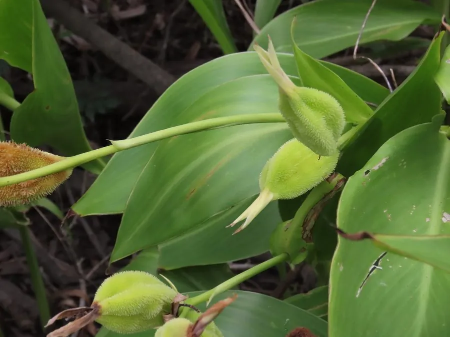

花卉与草本 · 植物界
黄花美人蕉 Canna flaccida

美人蕉科美人蕉属多年生草本，花淡黄色、瓣质柔软，耐水湿，是水景园与湿地绿化的优良观花植物。
- 分类
- 门被子植物门纲单子叶植物纲目姜目科美人蕉科属美人蕉属
- 栖息环境
- 原产北美东南部湿地，栽培于水边，喜光喜湿、耐水湿
- 地理分布
- 原产美国东南部；中国各地栽培
- 保护级别
- 暂无评估；栽培观赏植物，不涉及保护等级
物种志
黄花美人蕉为美人蕉科美人蕉属多年生草本，高可达一到一点五米，具粗壮根茎。叶片互生，大型，长椭圆形至披针形，形似芭蕉叶，表面绿色。花序为总状花序，花淡黄色，花瓣质薄柔软，退化雄蕊瓣化，花期六月至十月；蒴果球形，成熟时褐色开裂，种子黑色，果期秋冬季。
黄花美人蕉原产美国东南部湿地，中国各地有栽培。它喜光、喜温暖湿润，耐水湿，可浅水种植，适宜肥沃的壤土或淤泥，不耐寒。花淡黄清雅、叶形优美，是水景园、湿地和庭园水边的优良观花植物；也可作花境背景材料。根茎可入药，有清热利湿之效。黄花美人蕉在南方可全年生长，北方冬季地上部分枯死，根茎需保护越冬。
形态与习性
- 株高1–1.5 m，具根茎
- 花期6–10 月，花淡黄色
- 果期秋冬季，蒴果球形
- 光照喜光，全日照开花好
- 水分耐水湿，可浅水种植
- 土壤肥沃壤土或淤泥
- 主要用途水景园、湿地与花境绿化
趣味知识
- 黄花美人蕉耐水湿，可以直接种在浅水中，是少见的水生观花植物。
- 我们看到的“花瓣”其实是瓣化的雄蕊，真正的花瓣很窄小。
- 它的根茎在民间入药，有清热利湿、凉血止血之效。